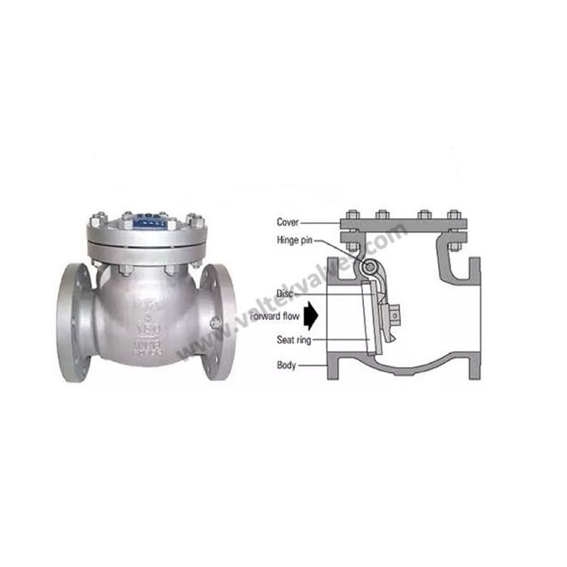
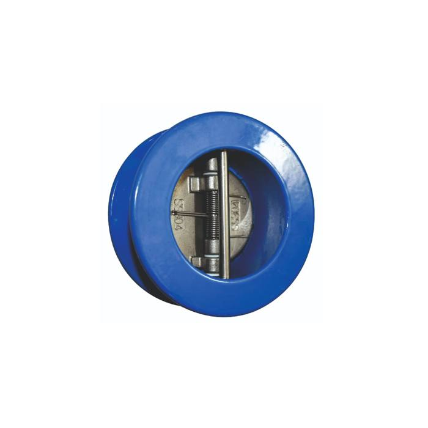
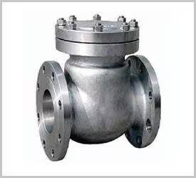
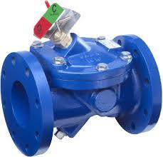
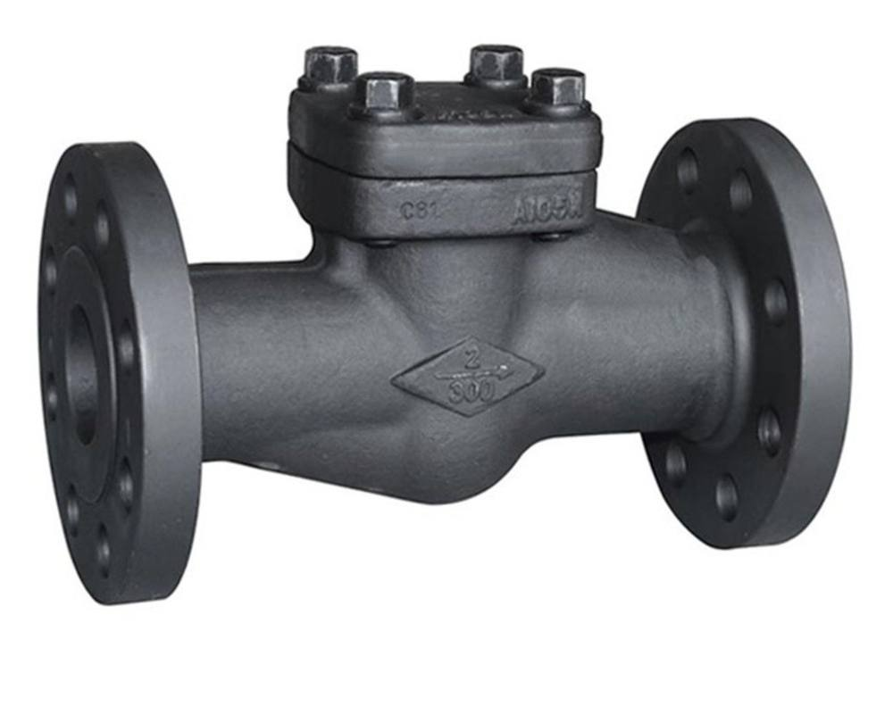

Industrial Check Valves (Non-Return Valves) — Manufacturer & Supplier
Check valves — also known as non-return valves — allow fluid to flow in one direction only, automatically closing to prevent backflow. Navjivan Valves supplies dual plate, swing, swing-flex and forged steel check valves for pump discharge lines, pipeline protection and process safety.

Product Overview
Check valves operate automatically, without manual intervention or an actuator, using the flow of the fluid itself to open the valve and reverse flow (or gravity, for swing designs) to close it. They are essential wherever backflow could damage equipment, contaminate a process or create a safety hazard — most commonly on pump discharge lines, compressor outlets and boiler feed systems.
Types of Check Valves

Dual Plate Check Valves
Also called double-disc or butterfly check valves. Two semicircular plates mounted on a hinge pin open with forward flow and close under gravity and back-pressure when flow stops or reverses, giving a compact, low pressure-drop design.

Swing Check Valves
A hinged disc swings open with forward flow and swings closed under gravity/backflow, providing a simple and reliable non-return function widely used across many industries.

Swing-Flex Check Valves
A flexible disc design that closes quickly and softly as flow decelerates, reducing water-hammer and slam compared with conventional swing check valves.

Forged Steel Check Valves
Built from forged steel for strength in high-pressure, high-temperature applications, typically in smaller bore sizes with threaded, socket weld or flanged ends.
Specifications
| Testing Standard | BS 5146 |
|---|---|
| Size Range | 2" – 16" (DN50 – DN400) |
| Pressure Class | 150 – 2500 |
| Body Material | WCB, WCC, WC6, WC9, C5, C12, LCB, LCC, CF8, CF8M |
| Seat | A105 + 13% Cr, A105 + Stellited |
| Trim | API Trim No. 1 to 16 |
| Face to Face | As per ASME B16.10 |
| End Connection | ANSI B16.5 (Raised Face Flanged), ANSI B16.25 (Butt Weld) |
| Operation | Automatic (flow-actuated, no manual operation) |
Specifications reflect the products currently supplied by Navjivan Valves. Exact availability may vary by size and material — please confirm with our team for your specific requirement.
Applications
- Pump Discharge Lines
- Boiler Feed Systems
- Oil & Gas Pipelines
- Water Distribution
- Power Plants
- Chemical Processing
Materials of Construction
Check valves are supplied in WCB, WCC, WC6, WC9, C5, C12, LCB, LCC, CF8 and CF8M body materials, with A105 + 13% Cr or A105 + Stellited seats.
Key Features
- Automatic backflow prevention with no external actuation required
- Dual plate design offers a compact, lightweight, low pressure-drop alternative to swing check valves
- Swing-flex options reduce water-hammer on fast-closing applications
- Robust forged and cast body materials for demanding process conditions
- Wide size and class range for pump, pipeline and boiler feed applications